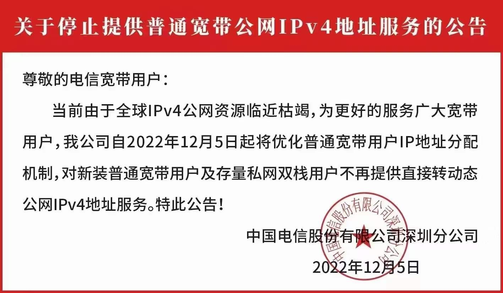

以上是网络拓扑图
因为在家庭中布置了服务器虚拟化、nas等服务，想要被公网访问，但是申请宽带公网ip限制了ipv4的80、443、8080等端口，不想域名:端口的方式访问，所以利用了一台公网的阿里云服务器，使用双重反向代理的方式实现公网域名的80访问。
虽然有ipv6公网ip，但是考虑很多单位工作网络只支持ipv4访问，ipv6很多情况下并不能被访问到。
流程
- 将所有的域名的解析到具有公网ip的
阿里云服务器上。 - 在
阿里云服务器部署反向代理服务,比如nginx。 - 家庭网络申请公网ip，由于家庭网络的公网ip是有有效期的，每隔一段时间（一般是48小时，不一定），所以，家庭网络部署ddns服务将
home.com域名解析到家庭的ip地址上，一般路由器，和软路由都会自带ddns服务。 - 在
阿里云服务器上，配置方向代理，将域名a.com转发http://home.com:20080上，host:a.com。 - 在家庭路由路由器上，将端口
20080转发给家庭网络内的nginx服务。 - 家庭网络内的
nginx服务上，将域名a.com转发10.0.0.100:8080的目标端口即可。
这样，访问 a.com 就能访问到家庭内网里的服务1（10.0.0.100:8080）部署的服务了。
注意
这里会有一些问题
- 由于使用的阿里云的国内服务器，所以
a.com域名需要进行备案的。 - 如果域名没有备案，可以使用国外服务器，可能会有网络慢的，不介意的话无所谓。
- 由于通过了云上服务器代理，经过了2次代理，所以理论最大下载网速，是云服务器带宽和家庭上行带宽之间取小的那个。（比如云服务器带宽1M,家庭下行1000M/上行25M，那么这个网络拓扑最大也就是1M）
最新更新：2022年12月04日
《关于停止提供普通宽带公网IPv4地址服务的公告》
